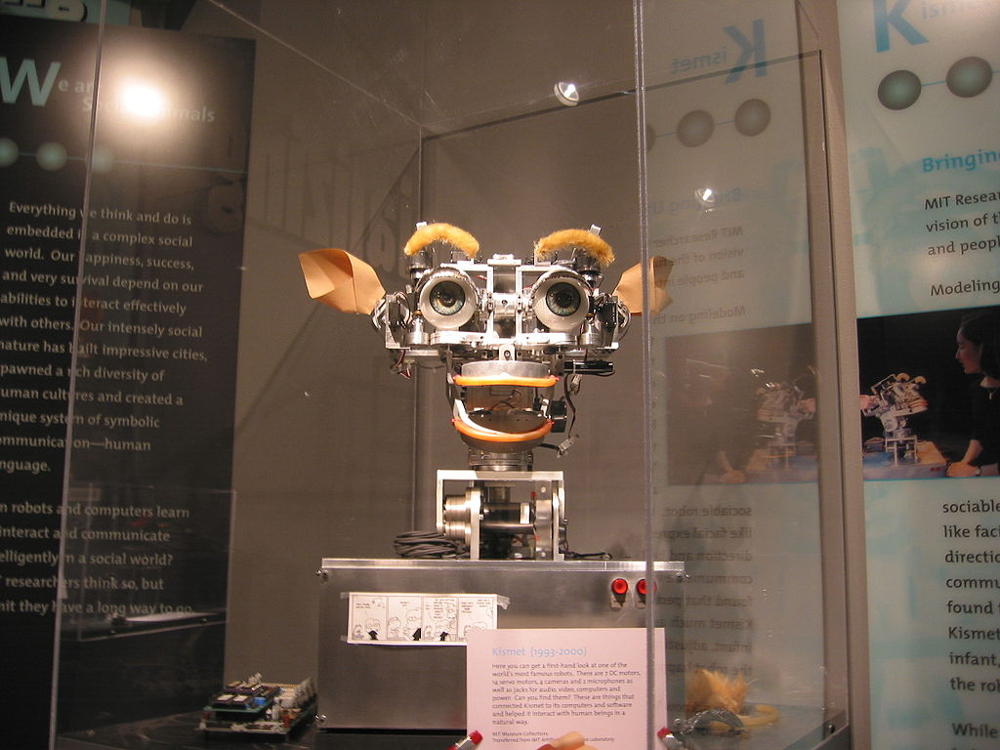

| Topic | small artificial intelligence | artificial general intelligence | Super Artificial Intelligence |
|---|---|---|---|
| the definition | It is artificial intelligence that specializes in one area, for example, there are artificial intelligence systems that can beat the world champion in the game of chess, which is the only thing they do. | This type refers to computers with the level of human intelligence in all fields, that is, it can perform any intellectual task that a person can perform. Creating this type of intelligence is much more difficult than the previous type and we have not reached this level yet. | Oxford philosopher Nick Bostrom defines superintelligence as “thought far smarter than the best human minds in nearly every field, including scientific creativity, general wisdom, and social skills,” and because of this type the field of artificial intelligence is an interesting area to delve into. |
